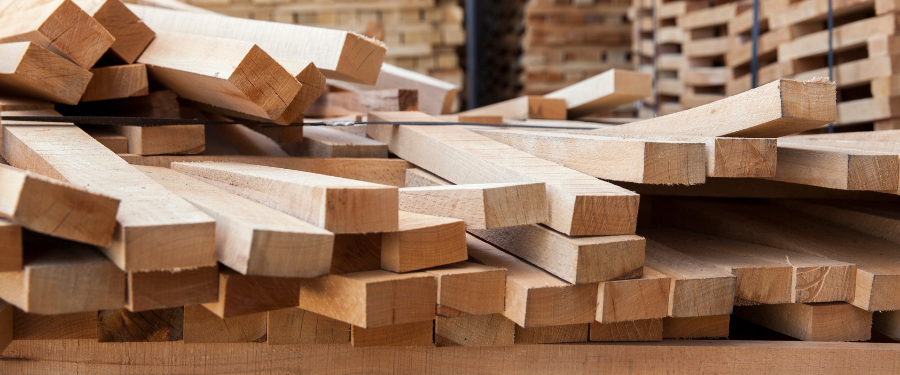

Bienvenidos a Vera Maderas
Somos una empresa dedicada a la venta de casas prefabricadas, muebles exteriores y carpintería a medida. Con años de experiencia en el mercado, nos especializamos en transformar la madera en piezas únicas y funcionales que se adaptan a las necesidades de nuestros clientes. Nuestro equipo está comprometido con la excelencia en cada proyecto, utilizando materiales de alta calidad y técnicas modernas que garantizan durabilidad y estilo. Además, ofrecemos asesoramiento personalizado para ayudarte a elegir las soluciones más adecuadas para tu hogar o negocio. En Vera Maderas, creemos que la madera es más que un material: es una forma de conectar con la naturaleza y crear espacios cálidos, acogedores y llenos de vida.

Nuestra Historia
Vera Maderas fue fundada hace más de 20 años con el objetivo de ofrecer soluciones personalizadas en carpintería y muebles de madera. Desde entonces, hemos trabajado incansablemente para convertirnos en referentes en el diseño y fabricación de cabañas prefabricadas y muebles de exterior, combinando tradición y modernidad en cada uno de nuestros productos. Nos enorgullece usar madera de origen sostenible, seleccionada cuidadosamente para garantizar resistencia, durabilidad y belleza en cada pieza. Además, nuestro equipo de artesanos y diseñadores se esfuerza por ofrecer soluciones únicas que reflejen el estilo y las necesidades de nuestros clientes, asegurando la máxima satisfacción. Con más de dos décadas de experiencia, seguimos comprometidos con la innovación, la calidad y la atención al cliente, valores que han sido el motor de nuestro crecimiento y éxito.
Nuestra Misión
Vera Maderas fue fundada hace más de 20 años con el objetivo de ofrecer soluciones personalizadas en carpintería y muebles de madera. Desde entonces, hemos trabajado incansablemente para convertirnos en referentes en el diseño y fabricación de cabañas prefabricadas y muebles de exterior, combinando tradición y modernidad en cada uno de nuestros productos. Nos enorgullece usar madera de origen sostenible, seleccionada cuidadosamente para garantizar resistencia, durabilidad y belleza en cada pieza. Además, nuestro equipo de artesanos y diseñadores se esfuerza por ofrecer soluciones únicas que reflejen el estilo y las necesidades de nuestros clientes, asegurando la máxima satisfacción. Con más de dos décadas de experiencia, seguimos comprometidos con la innovación, la calidad y la atención al cliente, valores que han sido el motor de nuestro crecimiento y éxito.
Productos Destacados
Mesa exterior
$350.00Juego de Jardín
$320.00Pergola
$400.00¡Oferta Especial en Muebles de Jardín!
Descuentos exclusivos en todos nuestros productos de jardín. ¡No te lo pierdas!
Ver más productos